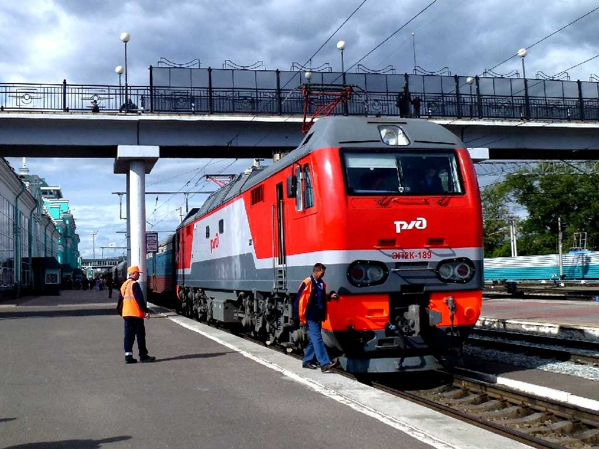
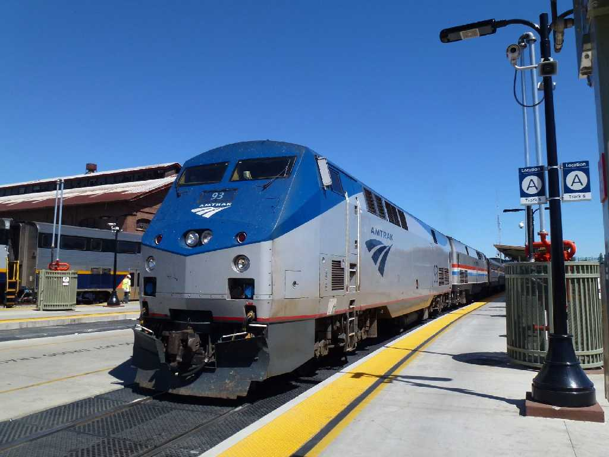

 
June 30 2013 Trans Siberian Railway Russia Train No.1 September 5 2013 Amtrak California Zephyr Train No.5
Around The World in 80 days by Railways June 24 2013 to
September 11 2013

Railways Trans Siberian Railway Russia Train No.1 Vladivostok to Moscow Timetable
Sapsan Train No.158 Moscow to Saint Petersburg
Russian Railways Train No.49 Saint Petersburg to Warsaw
Berlin Warsaw Express Train No.EC44 Warsaw to Berlin
Inter City Express Train No.ICE279 Berlin to Frankfurt
Inter City Express Train No.ICE9554 Frankfurt to Paris
Eurostar Train No.ES9037 Paris to London
Amtrak Lake Shore Limited Train No.49 New York to Chicago Timetable
Amtrak California Zephyr Train No.5 Chicago to San Francisco Timetable
Airlines Aeroflot Russian Airlines SU4665 A320 Narita to Vladivostok
American Airlines AA107 B777 London to New York
Japan Airlines JL1 B787 San Francisco to Haneda
Vladivostok  Moscow
Moscow
 Saint Petersburg
Saint Petersburg

Warsaw
 Berlin
Berlin
 Paris
Paris
 London
London

New York
 Chicago
Chicago
 San Francisco
San Francisco

Railways 20,000km Airlines 15,000km Total 35,000km
Narita Vladivostok Station Amur Bay Ussuriysk Ruzhino Vyazemsky Khabarovsk Amur Railway Belogorsk Magdagachi Erofei Pavlovich Chernyshevsk Ingoda River Karymskaya Chita Khilok Ulan-Ude Irkutsk Zima Irkutsk Railway Nizhneudinsk Ilanskaya Krasnoyarsk Kemerovo Railway Novosibirsk Barabinsk Novosibirsk Railway Omsk Ekaterinburg Perm Railway PermII Kirov Yaroslavsky Moscow Kremlin Cathedral Bolshoi Novodevichy Tretyakov Sparrow Hills Metro Station Suzdal Pokrovsky Vladimir Uspensky Pokrov Leningradsky Moskovsky Sankt Peterburg Hermitage Isaac Kazan Nikolsky Mariinsky Letniy Sad Peterhof Catherine Vitebsky Centralna Warsaw Zamek Barbakan Bazylika Saski PKiN Łazienki Centralna Hauptbahnhof Berlin Dom Alexanderplatz Potsdamerplatz Hauptbahnhof Frankfurt Gare de l'Est Paris Louvre Notre Dame Eiffel L'Opéra Palais Royal Madeleine St.Roch Vendôme Lido Moulin Rouge Versailles Fontainebleau Chambord Chenonceau Amboise Mont Saint Michel Atelier Millet Gare du Nord St.Pancras London Buckingham Westminster Abbey St. Paul's Cathedral Tower Bridge Tower of London British Museum National Gallery Piccadilly Circus Royal Opera House Greenwich Windsor Stonehenge Bath Cotswolds New York Liberty NYSE Trinity Ground Zero Yankees Tanglewood Pennsylvania Albany Union Chicago Board of Trade Loop Art Institute Cloud Gate Union Denver Fraser Glenwood Springs Grand Junction Salt Lake City Reno Sacramento Emeryville San Francisco Cable Car Twin Peaks City Hall Alcatraz Yosemite Falls Haneda
AI解説


 趣味の旅行 Travel
趣味の旅行 Travel